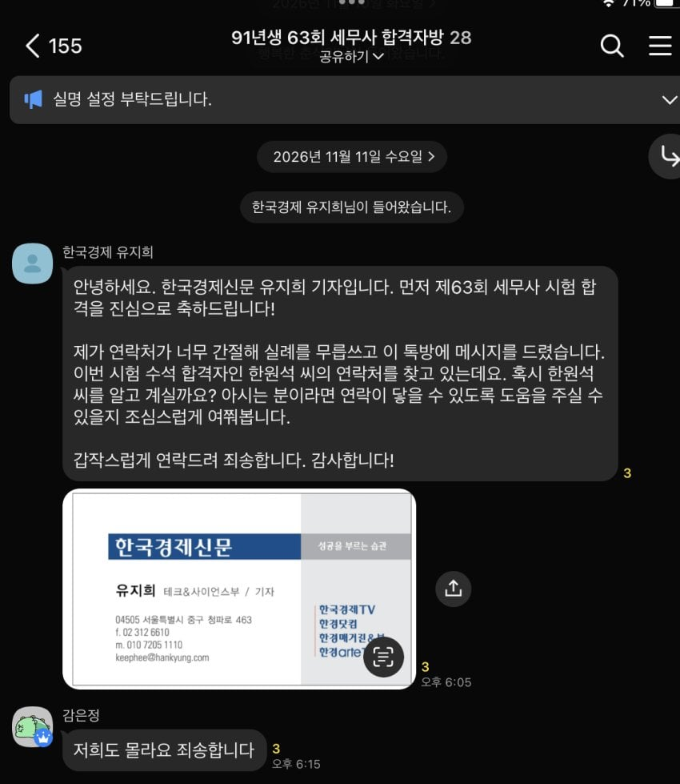

현직 기자분들이 합격자 단톡방와서 정보 구해가는 중 ㅎㄷㄷ

현직 기자분들이 합격자 단톡방와서 정보 구해가는 중 ㅎㄷㄷ
논술이리 그렇다던데
실무와 판례위주의 문제인데 이쪽 내용은 AI 가 정복하지 못한 분야라는 듯
실제로 AI한테 풀게 시켜보면 이부분만 성적 개판 난다고 함
ㅇㅇ 그게 맞는듯 세법학 2부는 부가세법과 조특법등을 물어봐서 사실 법령만 잘 적어도 고득점임
올해 수능이 마지막기회다 처벌도 솜방망이급이니 ㅋㅋㅋㅋㅋㅋ
세무사회 규칙에 부정행위가 의심되면 검증후 취소한다같은거 없으면 골치아파지겠네
ㅋㅋㅋ 이게 만약 AI안경 썼다고 나올 경우
피바람은 세무사 응시생들이 아니라 다음주 수능으로 거대하게 튈거다 ㅋㅋㅋ
반대로 말하면, 그 세무사 자격을 줄 수 있는 시험은 AI 딸깍으로 통과할 수 있는 시험이었다는 뜻이잖아?
세무사를 AI로 대체할 가능성이 있다는 뜻 아님? (수능, 토익, 각종 자격시험을 AI 안경으로 치며)
전부터 얘기 나온 건데, 구체적으로 입력할 자료를 세무사 쪽에서 제공해줘야 하는데 그게 안 돼서 못 하고 있단 얘길 본 거 같음
말그대로 자격이 있는지 인증하는 시험이어서 그런거고, 아직 ai는 케이스별 클라이언트별 대응이 안됨.. 하지만 곧 될수도
ㅇㅇ 그런 드립이었음. 시험을 AI로 쳐버리면 전멸하지 않을 시험은 없을 듯. 재료 준비 다 해놓으면 멋진 요리를 빠르게 만들어내는게 AI이고 이 요리에 해당되는게 시험이니까.
인류는 아직 자료수집용, 저가치 노동, AI 로봇먼지청소와 기름칠 용도로 쓸모가 있을 듯.
나 상법은 세무사, 회계사시험 둘다 90점대 맞아서 이건 그럴수 있다 치는데
특히 '재정학' '세법' 만점은 정말 엄청나네...
1차 시험이야 그럴 수 있는데 2차시험도 초고득점이라 말이안됨
90점이면 이해할만한데 만점은 안됨. 계산문제까지 그 시간안에 다 푼다고?
그치 만점은 진짜 말도 안되긴함
재정학까지도 인간의 범주임 세법 100점이 진짜 초초초초초초초초고수의 영역이고
중급닌자시험 시대가 왔다
현장에서 못 잡았으면 끝난거지 뭐 어쩔건데
경찰이 압수수색해서, 구매내역이랑 검색기록 같은거 뒤질 수 있나?
이미 다 삭제할거 했겠지만
압수수색이 가능한 불법이 아니야ㅎ 범죄가 아니잖아
당해시험 불합격에 시험 못 보는 규정이 있는거지
업무방해 성립 안하려나?
그냥 시험 취소에 몇 년 동안 못 보는 게 끝이야
재시험 얘기 나올까봐 합격 단톡방은 저거 싫어한다는 얘기가 있던데
어휴 재시험이면 안되지..
현직 회계사인데 난 개인적으로 200% 부정행위같다고 느낀다
누가그랬지 100m 5초에 달린거라고
걍 현직자들 회계사 세무사 다 똑같이생각할걸?
이건 100점맞으라고 보는 시험이 아니고
날고기는 서울대괴물수석도 회계사1차 평균 90점대초반임, 참고로 세무사 1차합격컷은 평균60점. 회계사는 상대평가라 케바케지만 대충 6~70점(요새는 과목이 바뀌어서 몰루)
그런데 이번에 이슈된 사람은 세무사1차성적이 평균 99.3점임 99.3 아예 시험에 대한 감이 없으니 미친수준으로 오버한거지
그것도 상경계열도 아니고 공고 - 경력으로 과기대 들어간 사람이 갑자기 마음잡고 회시 세시 들어와서 저런 성적을? "로봇공학업체"에서 일하다?
노베이스였다는데 불의타까지 줄줄이 맞힐 정도면… 좀 신기하긴 하네
근데 저 사람이 연막이고 방패막이 역할 아님? ai 써서 합격 한 사람들은 조용히 묻어가게 여럿이 조작한거 아닌지
오 재밌네.,세계1등 천재..
차석은 평소에 안경 안 쓴다고 후기 올라왔던데
느낌이 이번 AI 논란 엮이기 싫어서 먼저 인증한듯
https://www.youtube.com/watch?v=3ZSVUHO72bo
ㅋㅋㅋㅋㅋㅋㅋ 책이 너덜너덜하네
책에서부터 오는 신뢰감ㅋㅋㅋㅋ
생긴것도 훈훈 하네예
메타 글래스를 미국가서 구해왔다고 하면 작년 시험에서도 쓸 수 있었음ㅋㅋㅋ 이미 명문대나 의대쪽 다 갔겠지
이거 적당히 중상위 정도로만 조절했으면 논란없이 세무사 날먹했겠네?
생각있으면 조절해서 치팅한 애들 꽤 있을거 같은데
그래도 수능 직전에라도 이렇게 터져서 다행임
63년만에 100점인과목이잇다드라
만점 받으면 당연히 논란 될거라는걸 예상도 못할 정도의 사회적 지능을 가진 개멍청이...ㅋㅋㅋ
적당히 합격 컷트라인선에서 눈치껏 했어야지...
이건 그알이 떠야지
저정도야 뭐
근데 그래서 세1은 왜망했다는건데? 그땐 뭐 안경 누가 부셔먹기라도함??